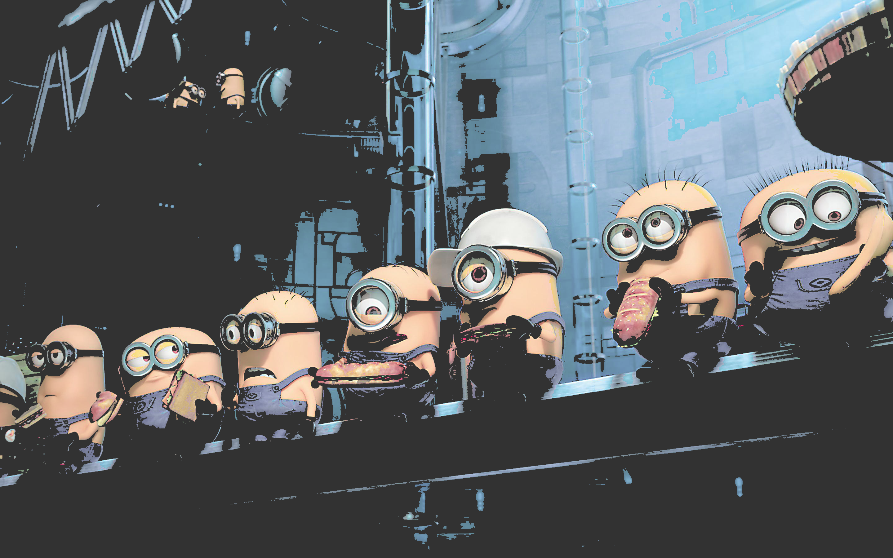
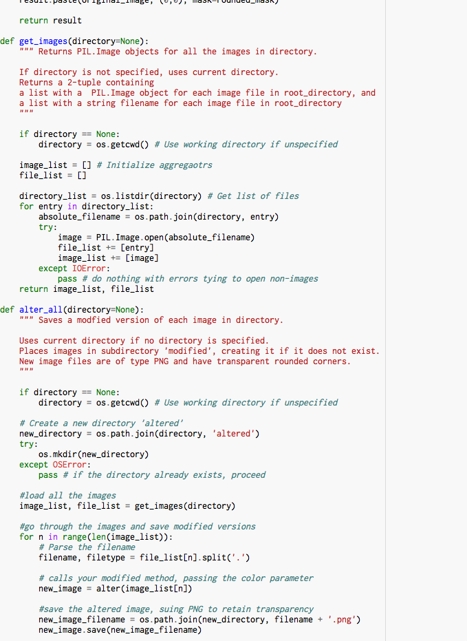
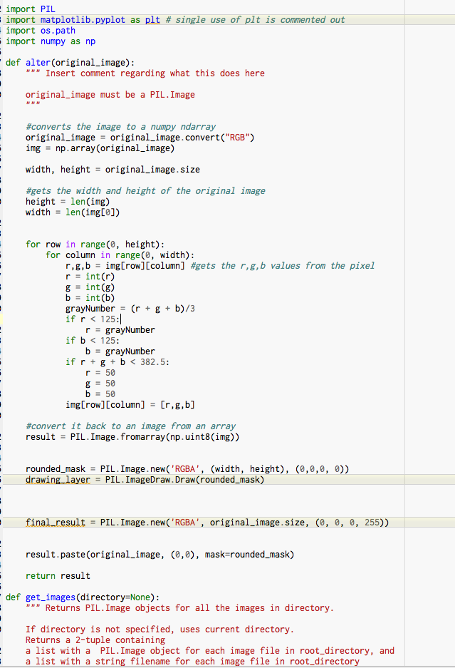

At the beginning of the year, I made a website based on a hobby of mine...
After that, I used Javascript to create a beautiful piece of art that I like to call BAILEY IN SPACE.

Here's the code for that. It's long. I must be smart.
var space = new Star(250,300,100, 1000, 1000000);
space.fill("black");
space.addTo(stage);
var Bailey = new Rect(200,100,100,100);
Bailey.fill("blue");
Bailey.addTo(stage);
var Baileybody = new Rect(100,200,300,200);
Baileybody.fill("black");
Baileybody.addTo(stage);
var Baileyarm = new Rect(50,200,400,100);
Baileyarm.fill("black");
Baileyarm.addTo(stage);
var Baileylleg = new Rect(300,400,100,100);
Baileylleg.fill("black");
Baileylleg.addTo(stage);
var Baileyrleg = new Rect(100,400,100,100);
Baileyrleg.fill("black");
Baileyrleg.addTo(stage);
var animationrl = new KeyframeAnimation('6s', {
from: {x: 100, y: 400, fillColor: 'blue', strokeColor:'black'},
'1s': {x: 0, y: 0, fillColor: 'yellow',strokeColor:'red'},
'2s': {x: 0, y: 400, fillColor: 'green', strokeColor:'green'},
'3s': {x: 400, y: 400, fillColor: 'red', strokeColor:'yellow'},
'4s': {x: 100, y: 400, fillColor: 'grey'},
to: {x: 100, y: 400, fillColor: 'black', strokeColor:'blue'}
}, {repeat:Infinity});
Baileyrleg.animate(animationrl);
var animationll = new KeyframeAnimation('6s', {
from: {x: 300, y: 400, fillColor: 'blue', strokeColor:'black'},
'1s': {x: 0, y: 0, fillColor: 'yellow',strokeColor:'red'},
'2s': {x: 0, y: 400, fillColor: 'green', strokeColor:'green'},
'3s': {x: 40, y: 400, fillColor: 'red', strokeColor:'yellow'},
'4s': {x: 300, y: 400, fillColor: 'red'},
to: {x: 300, y: 400, fillColor: 'black', strokeColor:'blue'}
}, {repeat:Infinity});
Baileylleg.animate(animationll);
var animationa = new KeyframeAnimation('6s', {
from: {x: 50, y: 200, fillColor: 'blue', strokeColor:'black'},
'1s': {x: 100,y: 500, fillColor: 'yellow',strokeColor:'red'},
'2s': {x: 10, y: 300, fillColor: 'green', strokeColor:'green'},
'3s': {x: 40, y: 400, fillColor: 'red', strokeColor:'yellow'},
'4s': {x: 50, y: 200, fillColor:'yellow'},
to: {x: 50, y: 200, fillColor: 'black', strokeColor:'blue'}
}, {repeat:Infinity});
Baileyarm.animate(animationa);
var animationb = new KeyframeAnimation('6s', {
from: {x: 100, y: 200, fillColor: 'blue', strokeColor:'black'},
'1s': {x: 200, y: 0, fillColor: 'grey',strokeColor:'red'},
'2s': {x: 0, y: 400, fillColor: 'green', strokeColor:'green'},
'3s': {x: 470, y: 40, fillColor: 'orange', strokeColor:'yellow'},
'4s': {x: 100, y: 200, fillColor:'orange'},
to: {x: 100, y: 200, fillColor: 'black', strokeColor:'blue'}
}, {repeat:Infinity});
Baileybody.animate(animationb);
var animationh = new KeyframeAnimation('6s', {
from: {x: 200, y: 100, fillColor: 'blue', strokeColor:'black'},
'1s': {x: 0, y: 0, fillColor: 'purple',strokeColor:'red'},
'2s': {x: 400, y: 400, fillColor: 'blue', strokeColor:'orange'},
'3s': {x: 200, y: 40, fillColor: 'red', strokeColor:'yellow'},
'4s': {x: 200, y: 100, fillColor: 'green'},
to: {x: 200, y: 100, fillColor: 'black', strokeColor:'blue'}
}, {repeat:Infinity});
Bailey.animate(animationh);
The second website I've ever created was one that highlighted my dream vacation spots.
One of the biggest projects I did this year was a big game that my group and I coded in Scratch. It was about a dog. His name was Dog-dog. He was a good dog.
Immediately following the Scratch project, I paired up with the transcendent Daniel Park to make a interactive game on python. It is a sequel to Dog-dog's Adventures, but takes place in story-form.
After that, I did a quick mini project...I made a program that can apply a filter to any image.




Finally, the last project of the year, with the same group as the first, I made a second Scratch project. This one was about space. Space is awesome. I'm awesome.